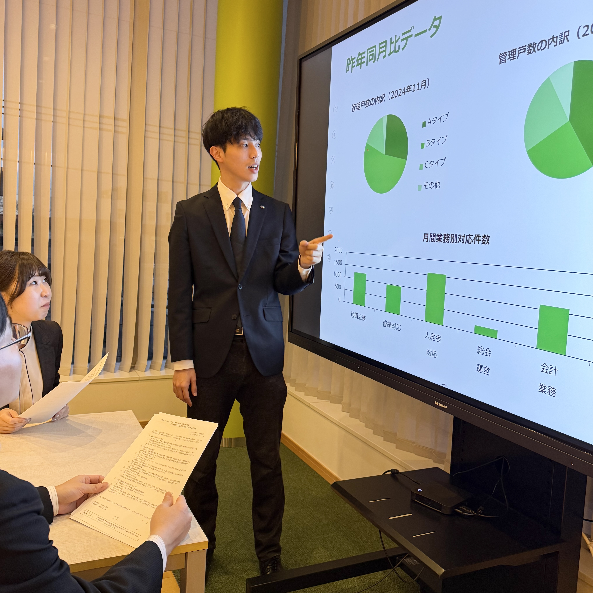

つくりたいのは、
"暮らし"の先にある安心
マンション管理は、住まう人々の暮らしを支える社会にとって不可欠な営みです。時代とともに"住まいかた"や"暮らしかた"が変わっていく中で、この仕事にはまだ大きな可能性が眠っていると信じています。だからこそ、新たな「問い」を立てていく必要があります。
私たち伏見管理サービスの原点であり使命は「安心を循環」させること。管理の選択肢を増やし、新たな価値をつくっていくことで、住民と建物、そして街の間に"信頼"が紡がれていきます。それが、より良い暮らしのきっかけになっていくのではないでしょうか。
"暮らし"の先にある安心。──この終わりのない問いに、私たちは向き合い続けていきます。
伏見管理サービスについて
私たちは、マンション管理を軸に"安心の連鎖"を社会に広げていくことを目指しています。伏見管理サービスの事業の原点と現在地、そしてこれからの展望をお伝えします。

カルチャー

職種紹介

多様なメンバーが長期的にマンション管理に向き合い、組織の枠を超えて連携し、住民の皆様により大きな安心を届けようとしています。
職種紹介 →働く環境
よくあるご質問
採用・働き方に関するよくある質問をまとめています。
はい、未経験の方も歓迎しています。入社後の研修制度や資格取得支援制度が充実しており、マンション管理の基礎からしっかり学べる環境を整えています。
管理業務主任者、マンション管理士、宅地建物取引士、建築士などの資格が活かせます。資格手当として最大5.9万円/月が支給されます。
はい、複数のポジションに同時にご応募いただけます。選考の中で適性に合ったポジションをご提案することもあります。
月平均残業時間は3.4時間です。年間で管理スケジュールを組むため、突発的な出勤もほぼありません。
はい、週1日のリモート勤務・在宅勤務が可能です。
原則土日休みの完全週休2日制です。総会や理事会が土日にある場合は平日に振替休日を取得します。振休取得率は100%です。
男女ともに育休取得率100%（2025年度実績）です。復帰後も安心して働ける環境を整えています。
募集職種
伏見管理サービスでは、マンション管理のプロフェッショナルを募集しています。
一緒に"暮らし"の未来をつくりませんか。